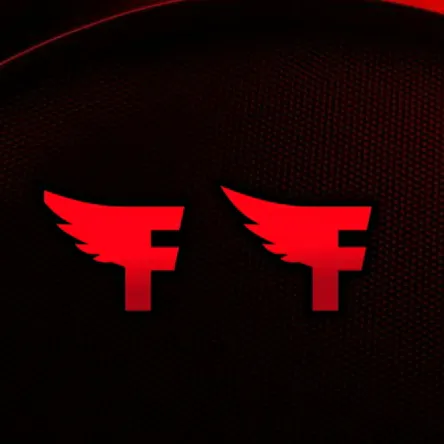
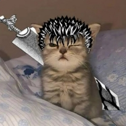
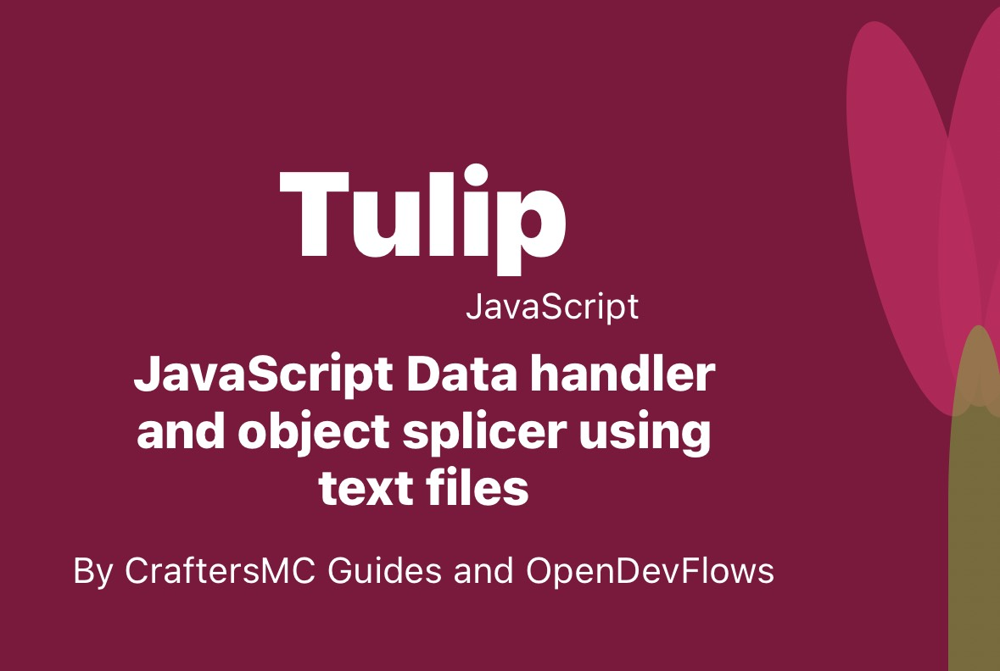

About CraftersMC Guides
CraftersMC Guides is a living project built to help players understand the server faster, make better decisions in SkyBlock, and find the right tools without jumping between a dozen pages.
What We Have Built
Over time, we turned the site into a full companion for CraftersMC players. The current version combines guides, leaderboards, calculators, market tools, event tracking, and support pages in one place.
- Guides: beginner, intermediate, advanced, and accessories help for players at every stage.
- Leaderboards: collections, slayers, skills, playtime, cakes, gems, and other ranking pages.
- Tools: calculators, minion helpers, pet XP, refines, and utility pages for daily play.
- Shared UI: a unified navbar, sidebar, footer, and home hero that now follow the same theme.
What We Removed
The current theme is cleaner because we trimmed the parts that felt disconnected or distracted from the content.
- Old mismatched header and footer styling that did not fit the darker glass look.
- Floating or isolated layout pieces that made the homepage feel broken up.
- Unstructured navigation blocks that made the sidebar harder to scan on mobile.
- Extra visual clutter that pushed important content away from the center of the page.
What We Are Planning Next
The site is still evolving. The current direction is to keep the UI consistent while adding more useful pages and deeper bot documentation.
- More guides and calculators for early, mid, and late-game players.
- More leaderboard categories and smarter filters for viewing results.
- More Feather Bot documentation, examples, and changelog entries.
- Better active-page highlights and small quality-of-life improvements across the sidebar.
- More mobile-first polish so the same layout feels comfortable on smaller screens.
Feather Bot
Feather Bot is our Discord companion for CraftersMC. It is built to answer common questions quickly inside Discord instead of making users search across the website manually. The bot is most useful for players who want fast access to profile data, market tools, reminders, and server utilities.
Pg Network built the Feather Bot project largely solo, and the docs on this site exist so players can understand the bot, its commands, and its rules without guessing.
- Player lookups: profile snapshots, playtime, rank history, cosmetics, and accessories.
- Economy tools: bazaar prices, bazaar graphs, flips, auctions, and player auction browsing.
- Server utilities: leaderboards, vote reminders, event reminders, reports, and general help.
- Account tools: account linking and unlinking, plus verification workflows for operators.
We also keep Feather Bot documentation in the site itself through a command guide, privacy policy, terms, and changelogs so users can see how the bot works before they use it.
Meet the Team
These are the people helping maintain the site and the broader project, along with the parts they focus on most.
ieduoo
Writer and content editor
Shapes the written guides, helps keep explanations clear, and makes sure the content feels easy to read.
Discord: ieduoo
Pg Network
Primary developer and project maintainer
Built Feather Bot from the ground up and has driven a large part of the guides-code project, including core
site structure, theme updates, navigation, footer/sidebar work, and data-driven features.
Discord: pgnetwork01
Github: PgNetwork01

TechonTheDev
Coder and systems support
Helps with features, fixes, and maintenance work across site pages and supporting tools.
Discord: techonthedev
Github: TechonVS
Former Members & Contributors
These people helped shape the project, either during its earlier stages or through focused contributions like design, data work, and advice.
TGJASSIYT
Coder and feature builder
Works on site functionality, page behavior, and the code that powers newer tools and layouts.
Discord: jassi_xc
Github: TGJASSIYT
Dev
Former coder
Contributed to earlier development work and helped establish some of the early project structure.
Discord: dev.odf
Github: dev-odf
Aakash Gupta
Advisor
Shared direction, feedback, and support during development and planning.
Discord: aakashgupta12
C69P2W
Former coder
Helped with code contributions and maintenance during an earlier part of the project.
Discord: samadop3116

Dipanshu
Designer
Focused on visuals, presentation, and the overall look of project pages.
Discord: dipanshuff
Github: DipanshuFF

LCKY
Data skimmer
Helped gather and organize data that powers some of the project’s more information-heavy pages.
Discord: lckythakur

RUBAW
Data skimmer
Contributed to data handling and helped keep some of the project datasets organized.
Discord: rubal_always

Misty_Human
Data skimmer
Helped with data collection and cleanup for content that depends on accurate lists and records.
Discord: youtuberudit
How We Build It
The site is built with HTML, CSS, and JavaScript, but a lot of the useful parts are powered by our own tooling too.
Tulip is our data handler and reader, used to keep structured project data manageable. Marigold is the secure editor layer we built so team members can update data without needing direct code access.

We used Tulip in Rank Sellers V3 and above to make it easier to add and manage sellers, and we plan to bring it to more data-heavy pages over time.
Marigold powers the Seller profile editor and lets us update shared datasets in a controlled way, with cloud-backed automation for GitHub commits.
Feather Bot is built with Discord libraries and is tightly connected to the website’s guides and data pages, which is why the bot docs now live alongside the rest of the project.
Contribute
We welcome contributions. If you notice errors or have ideas for new pages, you can send feedback through the feedback page, open a discussion in our Discord server, or contribute through our GitHub organization.
If you want to join the team, check the available roles on the applications page.